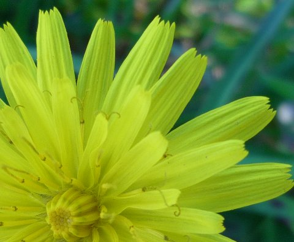

En esta web encontrarás información sobre la asociación y nuestra colección de fotografías de flores.
Tenemos las fotografías organizadas en diferentes categorías.
Si quieres comunicarte con nosotros visita nuestra página de contacto. Te esperamos.